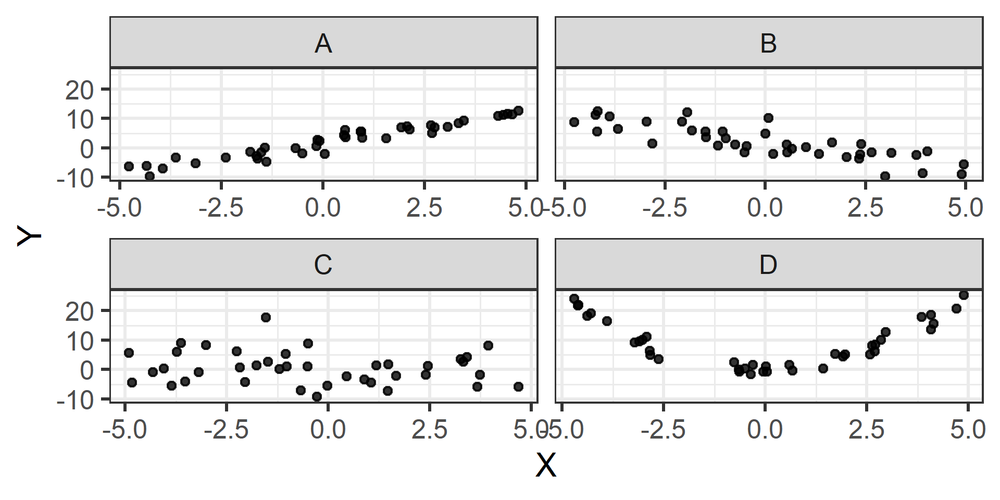
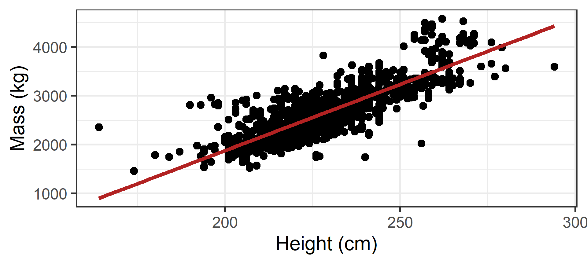
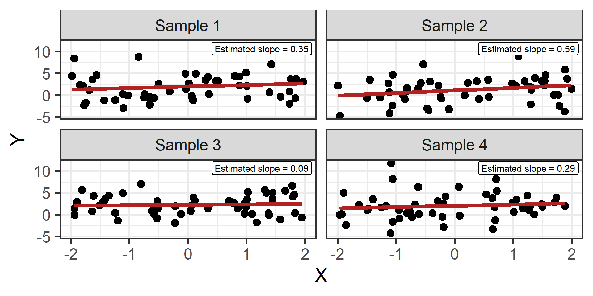
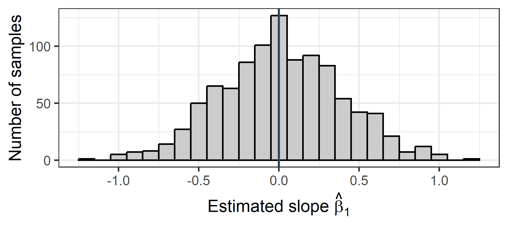

Hypothesis testing for a regression slope
By the end of this week students should be able to:
By the end of this week students should be able to:
What if our research question is specifically whether there is any linear association in the population?
What values of \(\beta_1\) are plausible?
Use a confidence interval.
Are the data compatible with a particular proposed value of \(\beta_1\)?
Use a hypothesis test.
For each plot, describe (1) the strength of the relationship, (2) the strength of the linear relationship, (3) visually approximate the slope

| Plot | strength of relationship | strength of linear relationship | slope |
|---|---|---|---|
| A | very strong | very strong | 2 |
| B | strong | weak/moderate | -2 |
| C | no relationship | no linear relationship | 0 |
| D | very strong | no linear relationship | 0 |
Is elephant height linearly associated with elephant mass in the population represented by these data?
Our population model is
\[\text{Mass}_i = \beta_0 + \beta_1 \text{Height}_i + \epsilon_i.\]
Our question is whether \(\beta_1\) differs from zero.
In symbols:
\[H_0: \beta_1 = 0\]
In context:
In the population, there is no linear association between elephant height and mean mass.
If \(\beta_1=0\), the mean of \(Y\) does not change linearly with \(X\).
\[H_0: \beta_1 = 0\]
For a hypothesis test, we operate by assuming the null hypothesis is true, then we see if there is evidence against it.
\[H_A: \beta_1 \neq 0\]
In context:
In the population, elephant height is linearly associated with mean mass.
If we find evidence against \(H_0\),

Is a nonzero sample slope enough to reject \(H_0\)?
No. Random samples can produce nonzero estimates even when the population slope is zero.
Then how do we know if we have evidence against \(H_0: \beta_1 = 0\)?
Suppose the true population model is
\[Y_i = 2 + 0X_i + \epsilon_i.\]


If the population slope were zero, how often would random sampling produce a result at least as extreme as ours?
This question leads to the p-value.
A slope of 5 could be surprising in one study but unsurprising in another.
We compare the estimate with its sampling variability:
\[t = \frac{\hat{\beta}_1 - 0}{SE(\hat{\beta}_1)}.\]
The test statistic tells us how many standard errors the estimated slope is from the null value.
\[\hat\beta_1=5,\qquad SE(\hat\beta_1)=1\]
\[t=5\]
The estimate is five standard errors from zero.
\[\hat\beta_1=5,\qquad SE(\hat\beta_1)=10\]
\[t=0.5\]
The estimate is half a standard error from zero.
If \(H_0\) is true, which test statistic is more surprising?
Suppose a research team collects one of these samples and estimates \(\hat{\beta}_1\). The software also determines how many standard errors the estimate is from zero.
If the population slope were actually zero, what is the probability of obtaining an estimated slope at least this many standard errors from zero?
A p-value is the probability, assuming the null hypothesis is true, of obtaining a test statistic at least as extreme as the one observed.
Call:
lm(formula = mass ~ height, data = elephants)
Residuals:
Min 1Q Median 3Q Max
-1375.40 -193.73 -32.32 153.63 1457.10
Coefficients:
Estimate Std. Error t value Pr(>|t|)
(Intercept) -3553.9303 111.5451 -31.86 <2e-16 ***
height 27.1575 0.4885 55.59 <2e-16 ***
---
Signif. codes: 0 '***' 0.001 '**' 0.01 '*' 0.05 '.' 0.1 ' ' 1
Residual standard error: 305.3 on 1468 degrees of freedom
Multiple R-squared: 0.6779, Adjusted R-squared: 0.6777
F-statistic: 3090 on 1 and 1468 DF, p-value: < 2.2e-16Note <2e-16 means \(< 2\times 10^{-16}\), which is the smallest p-value R will report
If there were no linear association between elephant height and mean mass in the population, the probability of obtaining a test statistic at least as far from zero as the one observed, in either direction, would be less than \(< 2\times 10^{-16}\).
Which is a correct interpretation of \(p-value=0.03\)?
A. There is a 3% probability that the null hypothesis is true.
B. There is a 3% probability that the results occurred by chance.
C. If the null hypothesis were true, results at least as extreme as ours would occur in about 3% of comparable studies.
D. There is a 97% probability that the alternative hypothesis is true.
Solution: C. The others are all similarly wrong.
The p-value is not:
Before examining the result, researchers select a significance level, \(\alpha\) (a cutoff).
A common choice is \(\alpha=0.05.\)
Decision rule:
A large p-value says that the data do not provide strong evidence against \(H_0\).
It does not establish that \(H_0\) is true.
Absence of evidence is not evidence of absence.
Statistical decision:
Because \(p-value < 0.05\), we reject \(H_0\).
Conclusion in context:
The results provide evidence of a linear association between elephant height and mean mass in the population (p-value \(< 2\times 10^{-16}\)).
… But what is that linear relationship? This analysis is incompelte.
Statistical decision:
If \(p-value \geq 0.05\), we would fail to reject \(H_0\).
Conclusion in context:
The results do not provide sufficient evidence of a linear association between elephant height and mean mass in the population (p-value = …).
Avoid saying:
This is where we stopped for Lec 5a
Suppose in a very large study, each additional hour of weekly study time is associated with an estimated increase of 0.08 percentage points in exam score.
\[\hat\beta_1=0.08,\qquad p<0.001\]
Discuss with a partner:
Is the observed association difficult to explain if \(H_0\) is true?
Use the p-value.
Is the estimated association large enough to matter in context?
Use the estimate, confidence interval, and subject knowledge.
With a very large sample, even a tiny association can produce a small p-value.
With a small sample, an important association might not produce a small p-value.
A small p-value does not imply a large or important association.
The p-value helps assess evidence against \(H_0\).
The confidence interval communicates:
2.5 % 97.5 %
(Intercept) -3772.73505 -3335.12552
height 26.19922 28.11584
Call:
lm(formula = mass ~ height, data = elephants)
Residuals:
Min 1Q Median 3Q Max
-1375.40 -193.73 -32.32 153.63 1457.10
Coefficients:
Estimate Std. Error t value Pr(>|t|)
(Intercept) -3553.9303 111.5451 -31.86 <2e-16 ***
height 27.1575 0.4885 55.59 <2e-16 ***
---
Signif. codes: 0 '***' 0.001 '**' 0.01 '*' 0.05 '.' 0.1 ' ' 1
Residual standard error: 305.3 on 1468 degrees of freedom
Multiple R-squared: 0.6779, Adjusted R-squared: 0.6777
F-statistic: 3090 on 1 and 1468 DF, p-value: < 2.2e-16We tested \(H_0:\beta_1=0\) against \(H_A:\beta_1\ne0\), where \(\beta_1\) represents the population slope relating elephant height to mean mass. Assuming the conditions for inference with simple linear regression have been met:
We found evidence of a linear association between elephant height and average mass in the population of adult Asian elephants (p-value = \(<2 \times 10^{-16}\)). We estimate an increase of one cm in height to be associated with an increase in average mass of 27.2kg, between 26.2 to 28.1 with 95% confidence.